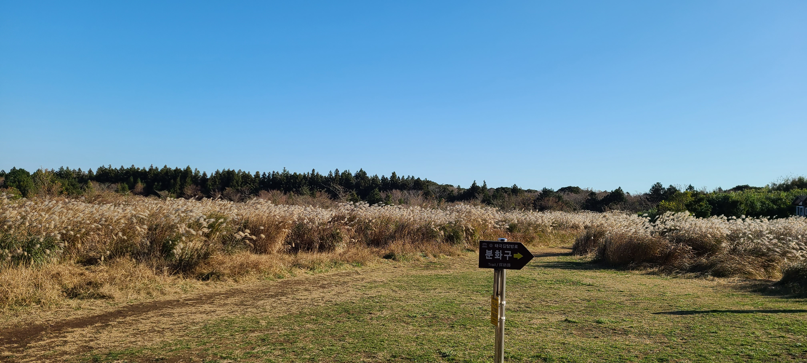
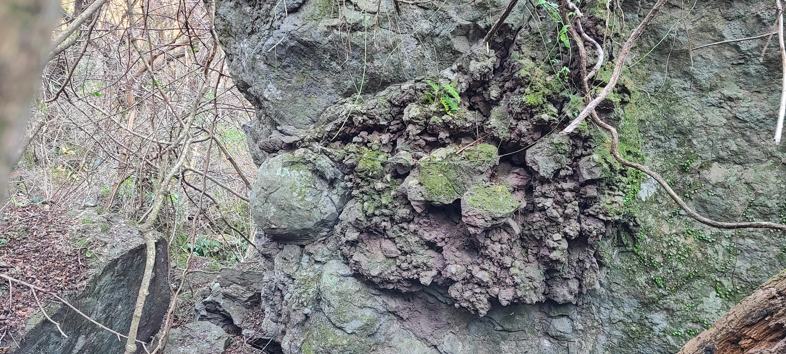
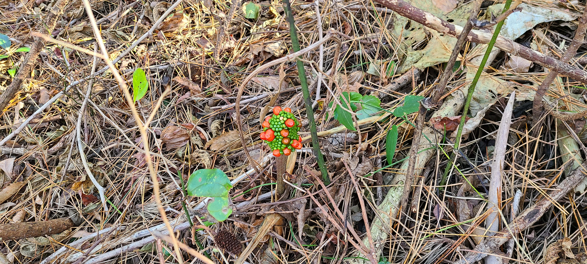
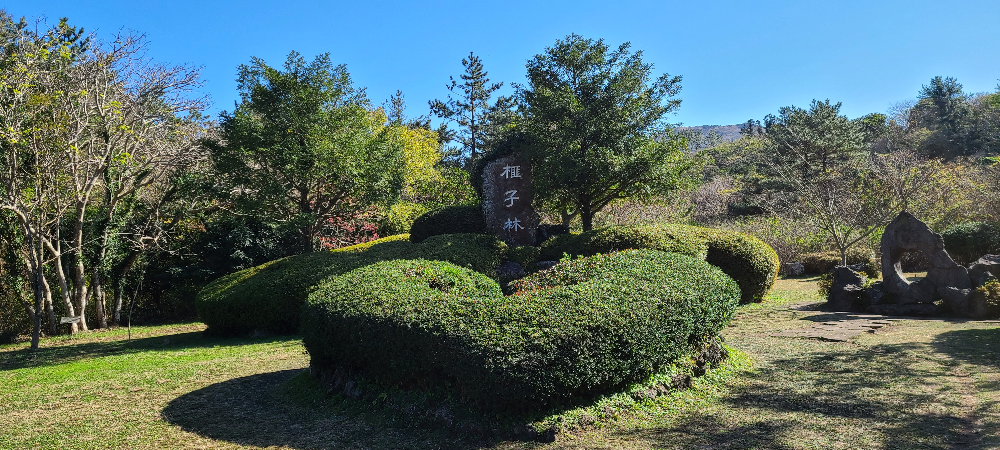
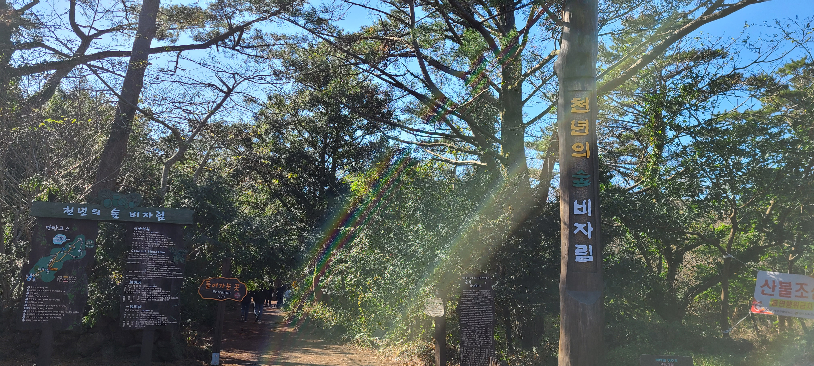
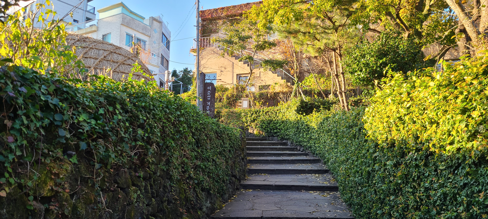
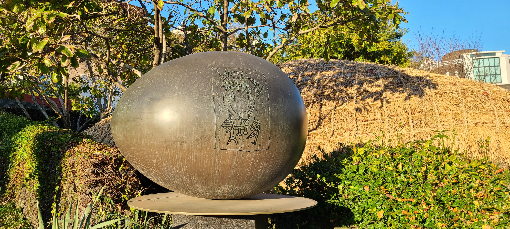
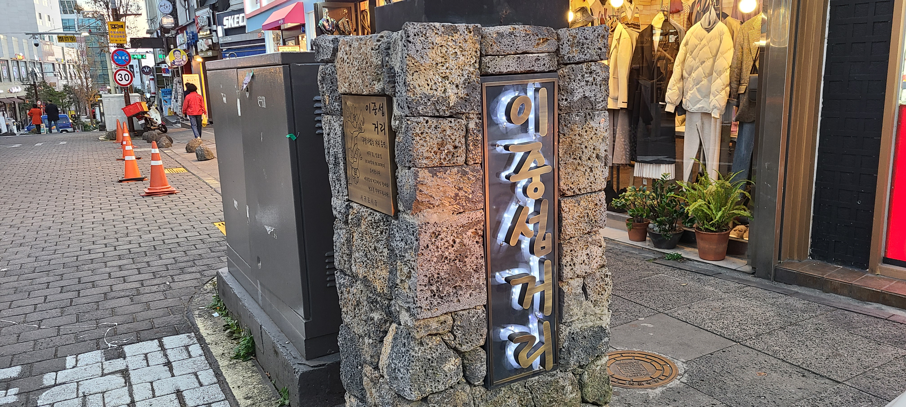

Third Day

거문오름 탐방로
1, 2, 3코스 (전코스 돌아보니 3코스는 2코스와 비슷)
거문오름 입구
"마스크 하세요"
주변오름들 안내판
멀리 한라산이 보인다
거문오름 분화구
나무숲이 우거졌다

거문오름 탐방중
갈대밭에서 쉬어감

화산탄
바위 왼편 축구공이 밖혀 있는듯 보인다

천남성
처음보는 식물이라 한컷
거문오름 탐방로 입구
내려오면서

비자림 입구
사진 찍기 좋은 장소

천년의 숲 비자림
들어가는 곳
새천연 비자나무
급히 찍느라 흔들렸네
연리목
나무도 운 좋으면...

이중섭 거주지
1년 정도 머문곳

기념조형물
바닷가에서 노는 아이

이중섭 거리
비수기라 그런지 한산하네